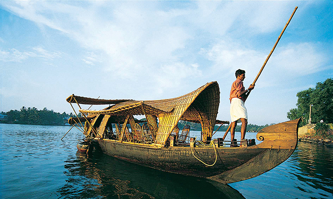

TOP DESTINATIONS
-

Alumkadavu
Alumkadavu located at 26 Kms from Kollam City and on the lakeside of Kollam-Alappuzha National Water Way. The “Green Channel Back Water Resort” at Alumkadavu makes itself a tranquil location for both foreign and Indian Tourists. The scenic beauty of blue green stretches of serene back water and rambling gardens of hundreds of coconut palms give the Green Channel Resort an incomparable beauty. Apart from providing tasty Kerala/North Indian/Chinese dishes the resort offers excellent facilities like comfortable accommodation, Back Water Cruise, visit to Matha Amritanandamayi Asramam, which is only 4 KM away, House Boats, Ayurvedic treatment for rejuvenation of body by qualified and experienced Ayurvedic Practioner, canal tour with the unique opportunities to experience the true village life and do fishing leisurely.
-
Jadayu park
The primary significant BOT tourism in Kerala, India Jatayu Earths Center is the principal joint exertion by the Tourism division of Kerala and Mr Rajiv Anchal alongside private value holders to make a goal, which is an extraordinary blend of all parts of tourism and offers a total Kerala, God’s own particular Country experience to each visitor. The idea is the cerebrum offspring of eminent movie executive, craftsmanship chief and stone carver Mr Rajiv Anchal and his group took ten years to fastidiously plan and finish this momentous venture. Jatayu Earths Center tourism venture is spread more than 65 sections of land of multi territory scene at Jatayupara close Chadayamangalam town in Kollam locale of Kerala. The landscape is 1000 feet above ocean level and has assorted geographic highlights extending from hills,valleys,rugged rocks, caverns to cultivable grounds. The goal is comfortable epic focus of the south Kerala visitor spots and is effortlessly accessible,since it is just 500 meters from the Main Central(MC) street. The closest universal airport,Trivandrum, is just 50 kms from Jatayu Earths Center.
-

Thevally Palace
A place of great historic importance, Thevally Palace is situated on the banks of Ashtamude Lake. Once served as the home of Maharaja of Travancore, it was constructed under the rule of Gauri Parvathi Bai between 1800 and 1819. The striking feature about the palace is that it presents an intriguing fusion of Dutch, English and Portuguese style of architecture.
-

Amithapuri
Amritapuri is the headquarters of Amma's worldwide mission and the spiritual home for Amma's monastic disciples and hundreds of householder devotees. This place, which is aldo her birthplace, now sees her followers from across India and abroad, coming here to have Amma's darshan (sighting). She is said to see each and every one of these followers, listen to their worries, console, encourage, and provide new direction to their lives, resulting from the follower's ardent faith in her.
-

Punalur
The town's name translates into 'town of water', the river Kallada flows through the city of Punalur. This town is also known as the 'lap of the Western Ghats' because of its serene natural beauty. Punalur is pretty famous for its pineapples, plywood, pepper and timber. It is also famous for its suspension bridge which was constructed was back in the 19th century by a British national. Punalur also has a bio-reserve known as Agasthyamalai.
-

Palaruvi
A gorgeous waterfall located on the Kollam-Shencottah Road at Palaruvi is lying at an altitude of 300 feet; the ideal time to enjoy the freshness of the waterfall is from June to January.